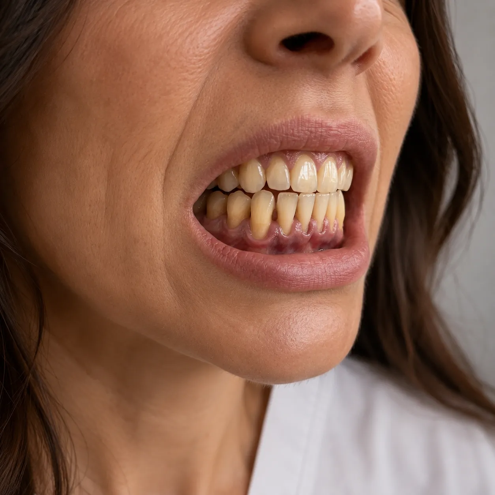
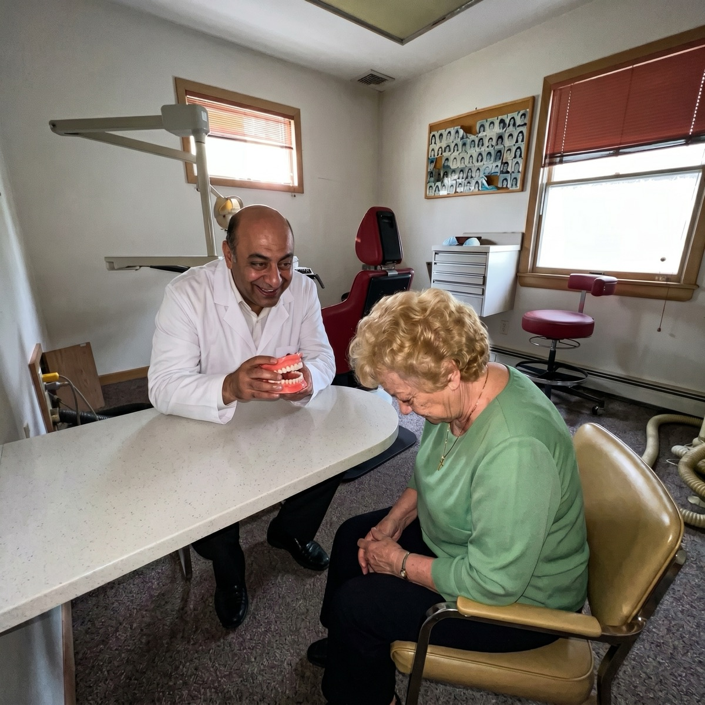
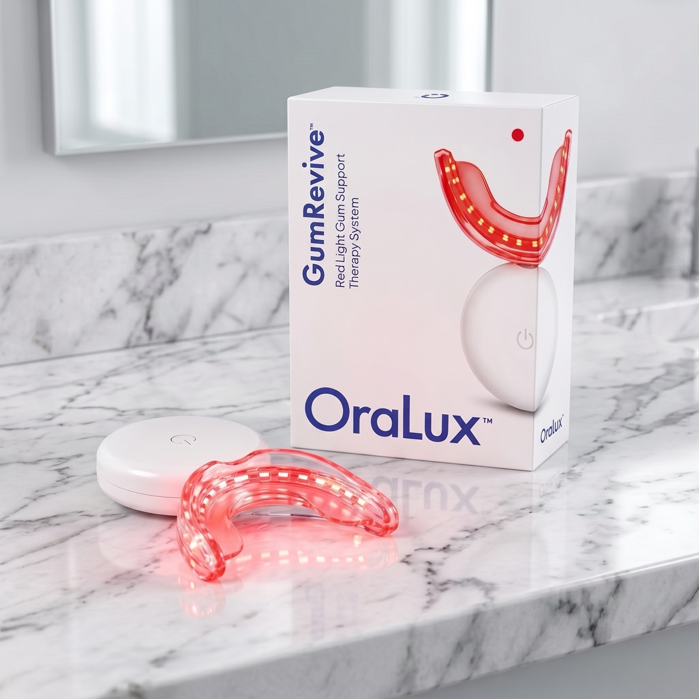
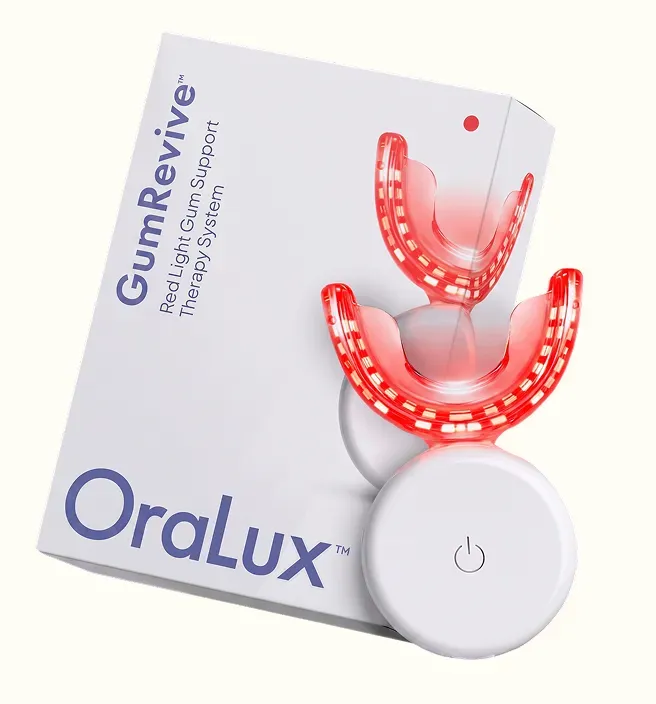

Brushing, Flossing... and Now a Few Minutes of Light? Why More Adults Over 40 Are Adding a New Step to Their Gum Care
Picture the moment. You're brushing your teeth, half awake, and something in the mirror catches your eye.
One of your lower front teeth looks... longer. Not by much. A millimeter, maybe. But it wasn't like that last year, was it?
You run your tongue along the gumline. A little tender. A touch of pink in the sink when you spit.
You tell yourself it's nothing. You brush a bit harder tomorrow.
If that sounds familiar, keep reading. Because what you're seeing is one of the most common health issues in America, and most people wait far too long to give it any attention.

Almost half of adults have it. Most don't know.
In a national survey led by the CDC, researchers found that 47.2% of US adults aged 30 and older had some form of periodontitis, the gum condition that slowly loosens the tissue holding teeth in place. Among adults 65 and older, the number reached 70.1%.1
The tricky part is that it rarely hurts at first. It shows up quietly:
- A little blood on the toothbrush or floss
- Gums that look red or puffy instead of firm and pink
- Teeth that seem to get "longer" as the gumline moves
- Bad breath that keeps coming back after brushing
- A sting from cold water near the gumline
Your teeth are only as secure as the gum and bone holding them. That's why the gumline deserves its own place in your routine.
Why brushing harder isn't the answer
When people notice their gums changing, the instinct is to scrub harder. Dentists warn against this: aggressive brushing can irritate gum tissue even more.
The real foundations haven't changed: a soft brush, daily flossing or interdental cleaning, not smoking, and regular dental checkups. If your gums bleed or your teeth feel loose, see your dentist first. Gum treatments, grafts and implants can cost thousands of dollars, and catching problems early is the cheapest thing you will ever do for your smile.

But once those basics are in place, a lot of people ask the same question: "Is there anything else I can do at home?"
Enter red light: what it is and what it isn't
Low-level red and near-infrared light, known in research as photobiomodulation, has been used for years in skin and wellness devices. It doesn't burn, cut or heat the tissue the way surgical lasers do. It simply delivers gentle light at specific wavelengths.
Researchers have also studied it alongside professional gum treatment. To be straight with you: the results are mixed and the research is still ongoing. Nobody honest can promise that light will reverse gum disease, and we won't either.
What it offers is something different: a comfortable, drug-free, hands-free ritual that many people like to add on top of brushing and flossing. And that's exactly the idea behind GumRevive.

Meet GumRevive
GumRevive, made by OraLux, is a hands-free mouthpiece that shines red (630 nm) and near-infrared (850 nm) light along your upper and lower gumline. You put it in, switch it on and relax while you read, watch TV or get ready for bed.
- Brush and floss as you normally would.
- Place the mouthpiece over your teeth and close gently.
- Switch it on and relax for the session time in the instructions.
- Rinse and dry it before putting it away.
No gels, no rinses, no refills.
How it compares
| Brush + floss | Dental visit | GumRevive | |
|---|---|---|---|
| Daily, at home | Yes | No | Yes |
| Hands-free | No | - | Yes |
| Diagnoses problems | No | Yes | No |
| Uses light | No | Sometimes | Yes |
GumRevive is not a replacement for any of these. It's an extra step for people who want to give their gums more daily attention.
Who it's for, and who should skip it
A good fit if you: already brush and floss, keep your checkups, and want a relaxing extra step focused on the gumline.
Talk to your dentist or doctor first if you: have braces or a recent implant, are pregnant, have a light-sensitivity condition, or take medication that makes you sensitive to light. It is not meant for children.
Where to get GumRevive
GumRevive is sold by the manufacturer through its official website, not on Amazon or eBay. Prices, bundles and shipping are set by the manufacturer and can change, so check the current offer on the official site.

Check availability & price🔒 You'll be taken to the official GumRevive website
GUARANTEE
90 days to decide
The manufacturer offers a 90-day money-back guarantee. Check the terms on the official website before you order.
Common questions
Does GumRevive replace my dentist?
No. Keep brushing, flossing and seeing your dentist. GumRevive is a wellness device for your routine at home.
Does it hurt or get hot?
Red and near-infrared LEDs are low-power; some people feel gentle warmth. Follow the instructions that come with the device.
How often do I use it?
Follow the manufacturer's instructions. Most people make it part of their nightly routine after brushing.
Can I use it with crowns, fillings or veneers?
Most people can. If you're unsure, ask your dentist.
Is it sold in stores or on Amazon?
According to the manufacturer, GumRevive is sold only through its official website. Products on marketplaces may be look-alikes.
How long does delivery take?
Orders are processed and shipped by the manufacturer. Delivery times and tracking are shown on the official website after checkout.
The bottom line
Gum changes are common, quiet and easy to put off. The most important steps are still the simple ones: gentle brushing, daily flossing and regular checkups.
If you've got those covered and want to give your gums a few extra minutes of attention a day, GumRevive is an easy way to do it, backed by the manufacturer's 90-day guarantee.
90-day money-back guarantee from the manufacturer
- Eke PI, Dye BA, Wei L, Thornton-Evans GO, Genco RJ. Prevalence of periodontitis in adults in the United States: 2009 and 2010. J Dent Res. 2012;91(10):914-920.